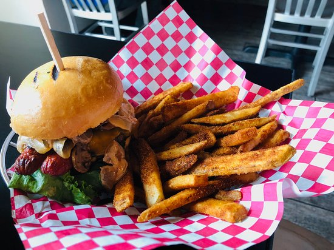

Burly Burger

Burly Burger is delicious
An all around, eat anytime burger with cheese and a fried egg. Feel free to add your other favoirte topping to this
satisfying sandwich.
Ingredients
- 2 slices white bread
- 1 (4 ounce) beef hamburger patty
- 1 teaspoon mayonnaise
- 1 egg
- 1 slice American cheese
Steps
- Place the bread in a toaster set to your desired level of darkness. Heat a skillet over medium-high heat.
Fry the hamburger patty for about 5 minutes per side, until cooked through.
While the patty is cooking, spread mayonnaise on one side of each piece of toasted bread and place them on a plate, mayonnaise side up.
- Once the patty is cooked through, transfer it to one slice of bread.
Crack the egg into the skillet and fry it until the yolk is firm, about 3 minutes if you cover the pan.
Place the egg onto the patty when done and top it with a slice of cheese.
Top with the other slice of bread. When finished, it should look like a sandwich